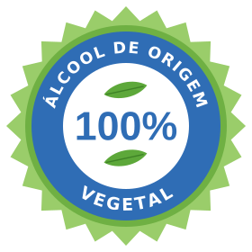

Aprenda sobre perfumes
Perfume francês feminino: o que é e como escolher o seu
Um perfume francês é, antes de tudo, uma escola: a de Grasse, onde nasceu o perfume moderno, com a sua pirâmide de notas e o seu gosto pelo equilíbrio. Para escolher o seu perfume francês feminino, comece pela família olfativa que combina com você e confira se o produto é original e regularizado na ANVISA.

O que é um perfume francês de verdade?
Quem já esteve em Grasse no começo de setembro, bem cedo, conhece um cheiro que não se esquece: o do jasmim. O jasmim é uma flor caprichosa. Ele precisa ser colhido de madrugada, quando a flor acaba de se abrir e antes que o primeiro raio de sol a toque. Depois disso, parte do perfume já se perdeu.
Essa paciência com a matéria-prima, esse respeito pela flor, é o começo da perfumaria francesa. É a mesma sensação dos campos de ylang-ylang em Madagascar, de manhã cedo: o perfume começa no campo, muito antes do frasco.
Uma breve história do perfume
O mundo árabe e persa inventou a destilação e a arte dos óleos perfumados, como o attar e o óleo de oud. Mas foi a França que inventou o perfume moderno, aquele que você usa em spray. Em Grasse, a arte de compor fragrâncias se desenvolve desde o século XVI e foi reconhecida pela UNESCO em 2018 como Patrimônio Cultural Imaterial da Humanidade. Veja Grasse, a cidade onde nasce a perfumaria francesa.
Foi na França que nasceram as moléculas de síntese na perfumaria (Fougère Royale, 1882) e a pirâmide olfativa em notas de saída, coração e fundo (Jicky, 1889). Veja como funciona a pirâmide olfativa.
O estilo francês: equilíbrio e elegância
Um perfume à francesa busca equilíbrio. Ele acompanha você o dia todo sem cansar quem está ao seu lado. Não é sobre ser o mais forte da sala, é sobre deixar uma lembrança.
Para a mulher, o perfume francês é um complemento, quase uma joia. Sair sem perfume é como sair sem um detalhe que faz falta. Veja o jeito francês de usar perfume.
Perfume árabe dura mais?
Um perfume árabe em spray é feito exatamente como um perfume francês: álcool, concentrado e pirâmide olfativa. O que faz um perfume durar não é a origem, é a concentração e o tipo de notas. Fundos doces e amadeirados (âmbar, baunilha, madeiras, almíscar) duram mais na pele. Notas frescas e cítricas evaporam mais rápido, seja qual for a marca.
Os óleos puros, sem álcool, são outro produto, com outra forma de uso. Na hora de escolher, compare perfumes da mesma família olfativa e da mesma concentração. E lembre que a pele de cada pessoa também muda o resultado. Veja perfume árabe ou perfume francês: as diferenças e a diferença entre EDT e EDP.
Como escolher seu perfume francês feminino
Comece pela família olfativa, ou seja, o estilo do perfume:
• Floral aldeído, o clássico francês. Elegante e atemporal: Miss Elysees.
• Chipre floral, uma família nascida na França. Sofisticada, com um fundo musgoso: La Petite Fleur Romantique.
• Floral oriental, intenso e envolvente. Para a noite e para marcar presença: Rouge Absolu.
• Floral frutado gourmand, doce e moderno. Para quem gosta de perfumes alegres: La Petite Fleur Blanche.
Ainda em dúvida? Faça o quiz: qual combina com você?, escolha pela sua nota preferida ou veja todos os perfumes femininos.
Paris Elysées: perfumaria francesa acessível
A Paris Elysées é uma marca francesa, criada em 1990. Suas fórmulas são criadas em Grasse por uma casa de composição, e os perfumes são produzidos na fábrica própria do grupo, na Índia. A marca está presente no Brasil desde 2000, com mais de 50 milhões de frascos vendidos no país em 20 anos. Veja a história da marca.

Álcool 100% de origem vegetal. A perfumaria francesa usa tradicionalmente álcool de origem agrícola: segundo a imprensa especializada, grandes casas francesas de perfume trabalham com álcool de beterraba produzido por uma cooperativa agrícola francesa. A Paris Elysées segue a mesma tradição: seus perfumes são elaborados com álcool 100% de origem vegetal, obtido pela fermentação de grãos, uma matéria-prima agrícola e renovável. A origem é rastreável e comprovada pela documentação dos nossos fornecedores.
Você sabe de onde vem o álcool do seu perfume? O álcool representa a maior parte de um perfume, e nem todo álcool é igual. Existe o álcool de origem agrícola, feito de grãos, beterraba ou cana, e existe o álcool sintético, produzido por via química, por exemplo a partir do petróleo ou do gás. Alguns perfumes do mercado usam álcool sintético. Os dois são permitidos, e no rótulo aparecem com o mesmo nome: “Alcohol Denat.”. A escolha é sua. Na Paris Elysées, escolhemos o álcool 100% de origem vegetal. Veja perfume à base de álcool ou de óleo.
Original, regularizado e com nota fiscal. Os perfumes Paris Elysées vendidos no Brasil são originais, notificados na ANVISA e distribuídos oficialmente pela Parfums de France, com nota fiscal. Desconfie de produtos sem procedência, sem regularização na ANVISA ou vendidos sem nota: além de não garantir a qualidade, podem ser falsificados. Veja como reconhecer um original.
A opinião de quem usa. No Mercado Livre, os perfumes Paris Elysées somam mais de 439 mil avaliações, com nota média de 4,6 de 5 (levantamento de 29/07/2026). Veja onde comprar.
Perguntas frequentes
O que é um perfume francês?
É um perfume da escola francesa de perfumaria, nascida em Grasse: composto em notas de saída, coração e fundo, com a busca de equilíbrio e elegância. A França inventou o perfume moderno em spray, com as moléculas de síntese (Fougère Royale, 1882) e a pirâmide olfativa (Jicky, 1889).
Perfume árabe dura mais que perfume francês?
Não por causa da origem. Um perfume árabe em spray é feito como um perfume francês: álcool, concentrado e pirâmide olfativa. A duração depende da concentração, das notas de fundo, da pele e do clima.
Qual o melhor perfume francês feminino?
Depende do seu estilo. Para um clássico elegante, um floral aldeído; para sofisticação, um chipre floral; para a noite, um floral oriental; para algo doce e moderno, um floral frutado gourmand. Faça o quiz do Guia para encontrar o seu.
Que álcool a Paris Elysées usa nos perfumes?
Somente álcool de origem vegetal, obtido pela fermentação de grãos, uma matéria-prima agrícola e renovável, como manda a tradição da perfumaria francesa.
A Paris Elysées é francesa?
Sim. A Paris Elysées é uma marca francesa criada em 1990, com fórmulas criadas em Grasse; os perfumes são produzidos na fábrica própria do grupo, na Índia, e a marca está no Brasil desde 2000.
Veja também
Os perfumes mais vendidos · Todos os perfumes femininos · Perfume francês masculino · Perfume árabe ou francês · Como reconhecer o original
Outros artigos
- Eau de Toilette, Eau de Parfum e Parfum: qual a diferença de verdade?
- Pirâmide olfativa: o que são notas de saída, coração e fundo
- Como fazer o perfume durar mais: 8 dicas que funcionam
- Como conservar o perfume: onde guardar o frasco
- Famílias olfativas: amadeirado, floral, oriental, fougère, chipre e mais
- Intensidade, projeção, fixação e rastro: o que significa cada termo
- Como escolher um perfume para presente
- Perfume árabe original: o que é e a diferença para o francês
- Perfume importado original: como saber se está regularizado na ANVISA
- Grasse: a cidade onde nasce a perfumaria francesa
- O jeito francês de usar perfume
- Quantas horas dura um perfume na pele? Fixação de verdade
- Perfume no calor do Brasil: fresco ou intenso?
- Paris Elysées é contratipo? Não: é uma marca francesa, registrada no INPI, com dezenas de submarcas e fórmulas próprias
- Perfume à base de álcool ou de óleo: qual dura mais?
- Perfume francês masculino: o que é e como escolher o seu
- O que dizem 42 mil comentários sobre os perfumes Paris Elysées
- Por que tantos perfumes se parecem? Tendências, twists e o que é o “dupe”
Sobre este conteúdo
- Autor: Laurent Morcrette, diretor da Paris Elysées no Brasil
- Responsável: PARFUMS DE FRANCE DISTRIBUIDORA DE PERFUMES LTDA, CNPJ 03.314.763/0001-03 · atualizado em 6 de novembro de 2026